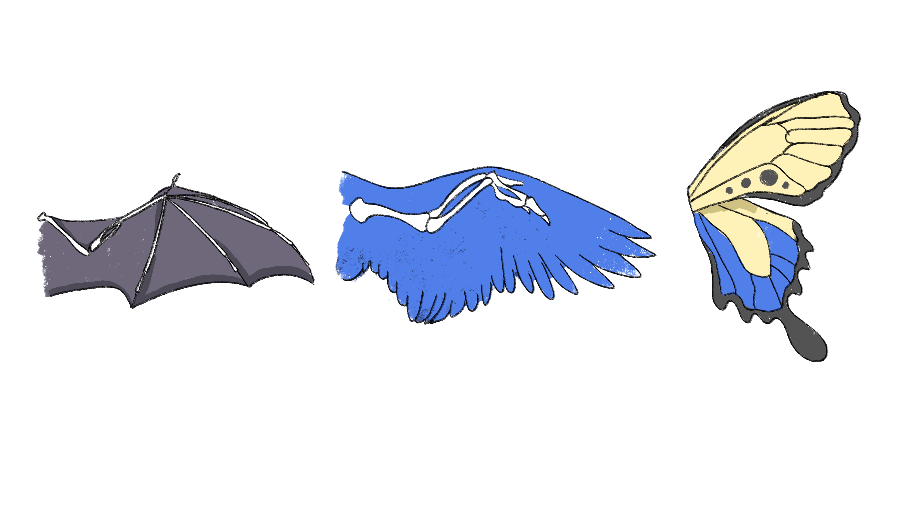
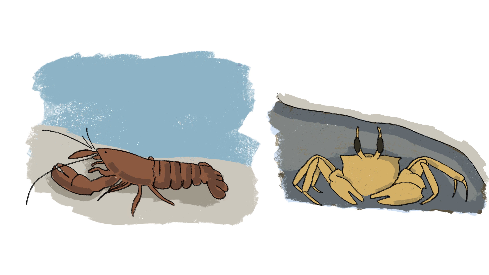

Convergent evolution is a form of evolution in which populations of organisms develop similar, or analogous, traits separately, rather than inheriting them from a common ancestor. Species which can reproduce typically are well adjusted to their habitat. As the environment around a population changes, whether due to migration, natural disasters, or a multitude of other factors, a new set of traits may become more advantageous. Individuals across different species who possess those advantageous traits survive and reproduce more successfully. Since the same traits are being selected for each time, regardless of the species’ initial similarity or relatedness, the species ultimately evolve to become more alike. Although these traits evolve separately, they often are quite similar on a molecular level (Stern, 2013).
One well known example of convergent evolution is the development of flight. Insects, birds, and bats belong to completely different taxonomic groups, and they all independently developed flight at different times (Cao, 2020). Because of this, their wing structure differs quite a bit (see Fig. 1) (Cao, 2020). Flight is advantageous for organisms which eat flying insects, such as birds, bats, and dragonflies (Cao, 2020). It is also highly taxing, however, as a lot of energy is required to move wings (Cao, 2020). Therefore, the development of flying organisms has been noted to correlate with eras when oxygen levels on Earth were higher (Cao, 2020).
Another example of convergent evolution is a phenomenon called carcinization, in which several different crustaceans have evolved to take on a crab-like form. Carcinization is also an example of recurrent evolution because certain lineages have lost and regained the crab-like form over time (Keiler, 2017). The original species is often lobster-shaped, with a cylindrical body and long tail (Keiler, 2017). A flatter, rounder shape, as well as a small tail, allows crabs to move around more quickly and hide from predators in small crevices (see Fig.2) (Keiler, 2017). These evolutionary advantages have led this trait to appear many times.
Convergent evolution has appeared many times in plant species as well. For instance, human agricultural development has historically been the cause of some plants’ convergence. Human populations across the world preferred larger seeds in grain crops, independently selecting for this trait while planting and breeding crops (Fuller et al., 2014). The result mimics the effects of other evolutionary pressures - crops which better fit human preferences have survived, and especially with the introduction of modern technologies in the industrial revolution, have come to dominate certain habitats (Ramankutty and Foley, 1999).
Another example of convergent evolution in non-animal species is the development of trees. While there are many definitions for what can be considered a tree, most definitions include woodiness and secondary growth. Woodiness is achieved through the growth of a secondary cell wall, which provides additional structural support for the plant (Lyczakowski, 2024). This trait first evolved around 430 million years ago, and was instrumental in allowing plants to flourish on land (Lyczakowski, 2024). Secondary growth is the ability of a plant and/or its roots to grow in thickness or diameter (Ragni, 2018).
The species first mistakenly conjectured to have a tree-like appearance was the prototaxite. Initially believed to be a 20-some foot tall conifer, the prototaxite was actually a giant fungus which lived around 470 million years ago, long before the actual evolution of trees (Vajda, 2023). Recent research has shown that prototaxites likely laid on their sides, however, instead of standing straight up (Vajda, 2023). Their enormous size would have allowed them to suck up nutrients over a large span of land, while height was unlikely to have benefited them in any way (Vajda, 2023).
The two main groups of currently extant tree species are gymnosperms and angiosperms (Troitsky, 1991). Gymnosperms are generally believed to be older than angiosperms, with angiosperms estimated to have split from gymnosperms around 360 million years ago (Troitsky, 1991). Although scientists believe they likely evolved from a single tree-like ancestor, the fossil record has shown that many plant lineages have separately evolved tree-like features (Spicer, 2010). Several extinct ferns, including the Sphenophyllales, independently developed secondary growth (Spicer, 2010). There is also evidence of convergent evolution in the nanostructure of gymnosperm and angiosperm woody species (Lyczakowski, 2024). Certain woody gymnosperm species known as gnetophytes have evolved thinner microfibrils, making their woody structure more similar to angiosperms’ than their closer relatives’ (Lyczakowski, 2024).
More recent examples of convergence can be found in a phenomenon known as insular woodiness, in which herbaceous plants growing on completely separate islands have repeatedly been found to evolve into woody species over time (Hooft et al., 2021). There are over 170 known transitions from herbaceous to woody plant structures (Hooft et al., 2021). It is worth noting, however, that insular woodiness is an example of derived woodiness (Hooft et al., 2021). That is, the herbaceous plants that first landed on the islands likely evolved from woody plants, meaning they were ancestrally woody (Hooft et al., 2021). Facing evolutionary pressures on the islands, some portion of the ancestrally-woody herbaceous species re-developed woodiness (Hooft et al., 2021). It is theorized that certain types of plants, such as monocots, which are a type of non-woody angiosperms, may be unable to evolve into woodiness on islands (Zizka, 2022).
While one of the primary hypotheses for the advantages of woodiness on islands, an edge in competition with other plants, may have been applicable to the development of trees hundreds of millions of years ago, other theories are more closely related to conditions specific to islands (Lens, 2013). Tropical islands often have aseasonal climates, which means that plants growing there rarely experience frost days (Zizka, 2022). This aseasonal climate as well as drought conditions during the summer have been found to be positively correlated with high amounts of insular woody species (Zizka, 2022), likely because woody species are better at withstanding drought conditions than herbaceous species (Hooft et al., 2021). Distance from neighboring islands has also been found to be important, as it helps to decrease competition from existing woody species (Hooft et al., 2021). Islands with lower numbers of herbivores are more likely to have woody species as well, as plants can quickly diversify without the threat of being eaten (Zizka, 2022). This diverse array of environmental pressures has repeatedly led to the development of woodiness, creating one of the most striking examples of convergent evolution in Earth’s history.
Convergent evolution can serve to strengthen arguments for the advantageousness of a particular trait (Slayton, 2015). That is, if a trait exists in a single species or in a set of related species, it may be dismissed as the result of a random mutation that was favored by natural selection in that lineage. If multiple species have developed the same trait separately and independently, however, this suggests that the trait was helpful to the different organisms in some way (Slayton, 2015). Convergence is also sometimes used as a tool to determine evolutionary limits, that is, to determine what traits are impossible to obtain through mutations and natural selection, although this approach is controversial (Slayton, 2015).
Some scientists analyze convergent traits in other organisms to better understand the human body and to develop medical treatments. For instance, while bats, birds, and insects evolved flight separately, they all use similarly structured striated muscles to move their wings (Cao, 2020). Analyzing what makes these muscles so efficient may help direct research into muscle weakness and heart failure among humans in the future (Cao, 2020). Other scientists study convergent evolution in plants in search of climate change solutions. Secondary cell walls contain much of the world’s carbon, so a better understanding of the differences between secondary cell walls in different plants may help inform more effective reforestation policies (Lyczakowski, 2024).